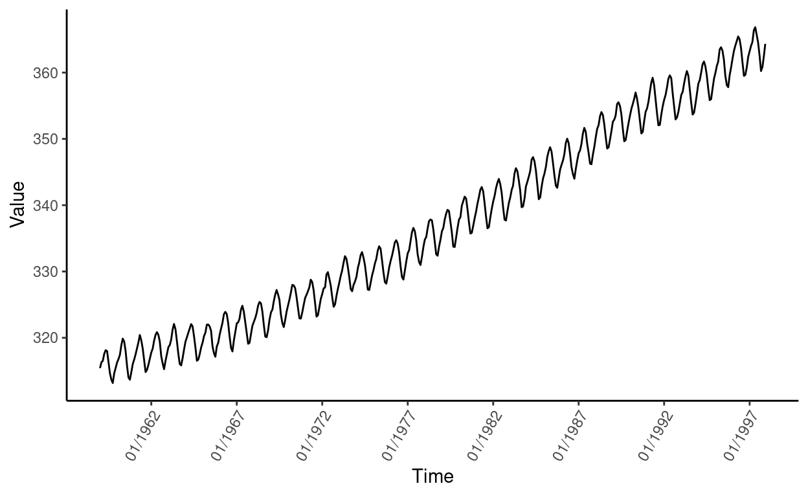
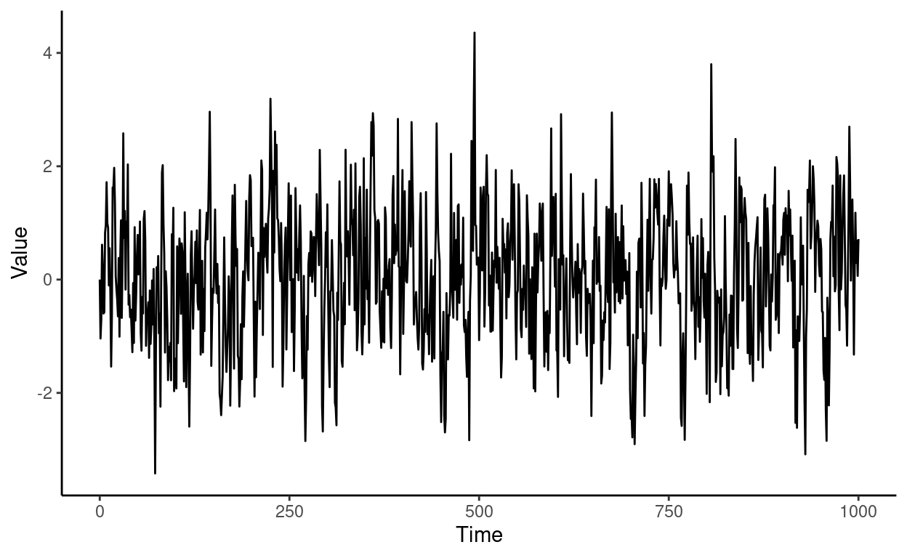
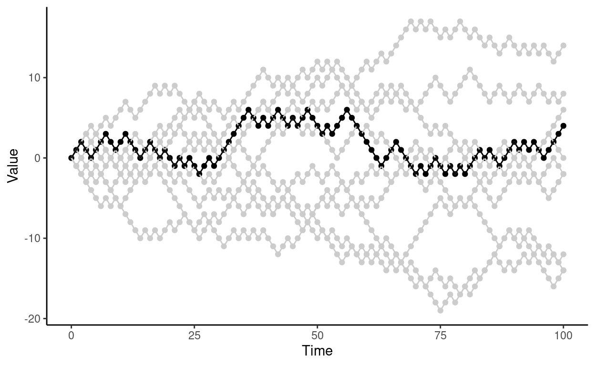

Welcome
In the exercises you will see realizations of time series. In each exercise, based on the figure, you need to decide if the time series is stationary or not. Remember that a time series \(\{X_t : t \in \mathbb{Z}\}\) is stationary if
\(\mathbb E |X_t|^2 < \infty\) for all \(t\in\mathbb{Z}\),
\(\mathbb E X_t = m\) for all \(t\in\mathbb{Z}\) and
\(\mathrm{Cov}(X_r, X_s) = \mathrm{Cov}(X_{r + t}, X_{s + t})\) for all \(r,s,t\in\mathbb{Z}\).
Covariance between two random variables \(X\) and \(Y\) is defined as \(\mathrm{Cov}(X, Y) = \mathbb E((X - \mathbb E X)(Y - \mathbb E Y))\). Covariance tells if there is linear dependence between two random variables:
\(\mathrm{Cov}(X, Y) = 0 \Rightarrow\) \(X\) and \(Y\) are linearly independent.
\(\mathrm{Cov}(X, Y) > 0 \Rightarrow\) \(X\) and \(Y\) are positively correlated.
\(\mathrm{Cov}(X, Y) < 0 \Rightarrow\) \(X\) and \(Y\) are negatively correlated.
Exercise 1: Carbon Dioxide Measurements
Below time series represents montly carbon dioxide measurements of the Mauna Loa volcano in Hawaii from 1959 to 1997 (one measurement per month, 468 observations).

Exercise 2: Simulated Data from \(AR(1)\) Process
Let \(\varepsilon_t \sim N(0,1)\), \(t \in\{1, 2, \ldots, 1000\}\), be independent and identically distributed random variables from the standard normal distribution. Below time series is simulated from the so called \(\mathrm{AR}(1)\) process (AR = autoregressive), \[\begin{equation*} X_t = \begin{cases} 0, & t = 0 \\ \theta X_{t-1} + \varepsilon_t, & t\in\{1, 2, \ldots, 1000\}, \end{cases} \end{equation*}\] when we set \(\theta = 0.5\).

Exercise 3: Simple Random Walk
Let \(\varepsilon_t\), \(t \in\{1, 2, \ldots, 100\}\), be independent random variables such that \(\mathbb{P}(\varepsilon_t = -1) = \mathbb{P}(\varepsilon_t = 1) = 1/2\). Below figure includes 10 realizations of the simple random walk, \[\begin{equation*} X_t = \begin{cases} 0, & t = 0 \\ X_{t-1} + \varepsilon_t, & t\in\{1, 2, \ldots, 100\}, \end{cases} \end{equation*}\]
